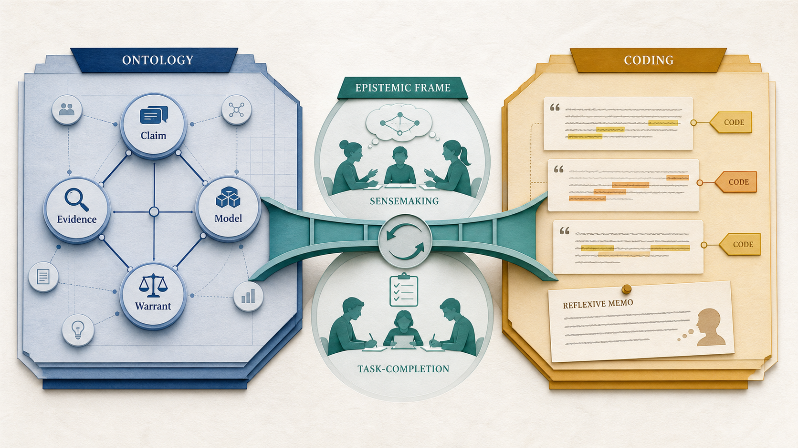
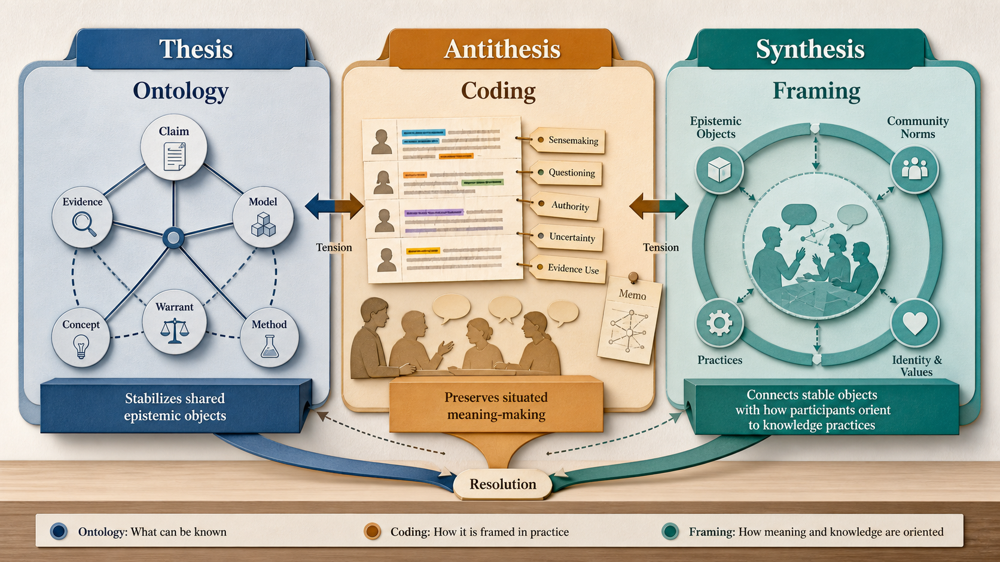
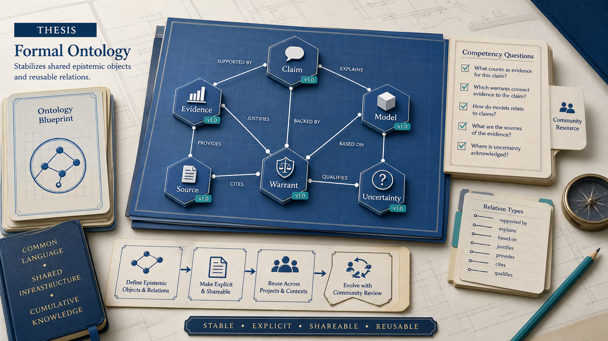
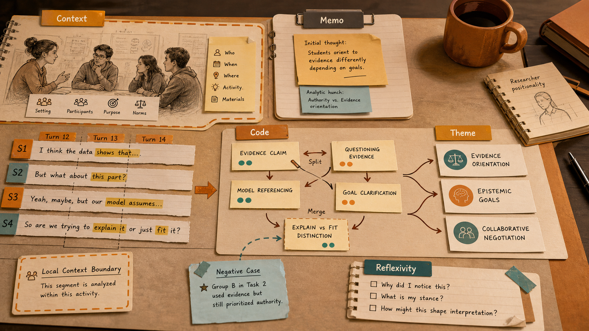
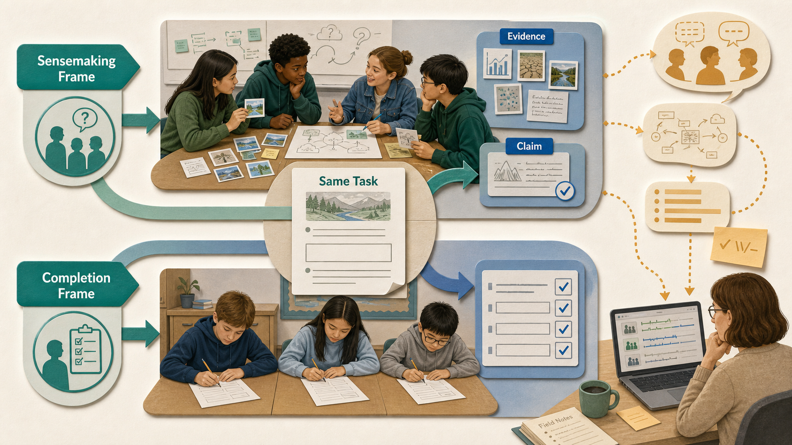
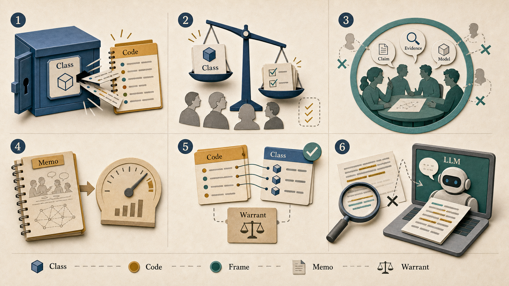
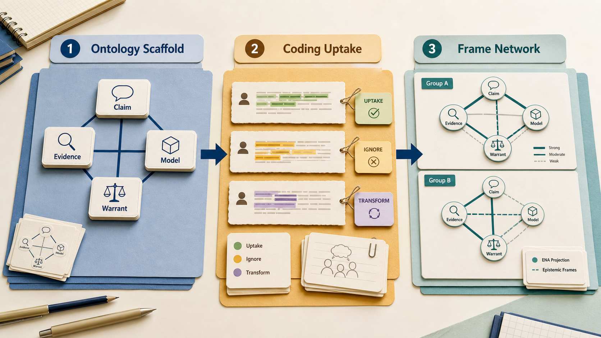
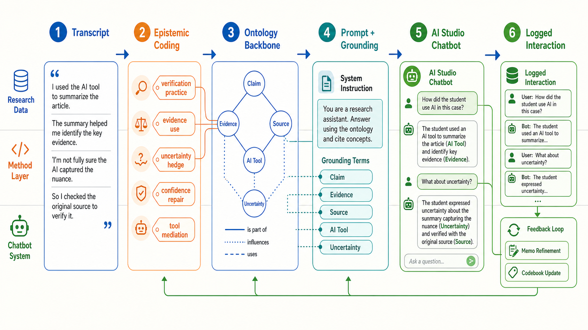

온톨로지, 코딩, 인식론적 프레이밍
지식그래프에는 익숙하지만 해석적·반성적 질적 방법과 교육학의 인식론적 프레이밍은 처음 접하는 대학원 AI 연구자를 위한 실전 온보딩 가이드.
§1한 페이지로 보는 변증법약 3분
이 페이지는 세 가지 질문을 구분하는 법을 배운다. 온톨로지는 “이 영역에는 어떤 대상과 관계가 있는가?”를 묻는다. 코딩은 “이 데이터 조각이 이 연구에서 어떤 의미 일을 하는가?”를 묻는다. 프레이밍은 “참여자가 지금 어떤 지식 활동이 일어난다고 보는가?”를 묻는다.
이 가이드는 변증법 구조로 읽어야 한다. 명제(thesis)는 온톨로지가 공유 대상(shared object)을 안정화한다는 것이다. 한 연구 공동체가 주장(claim), 증거(evidence), 출처(source), 모델(model), 개념(concept), 관계(relation), 클래스(class)가 무엇인지 합의하면, 그 대상들은 도구와 데이터셋과 연구를 넘어 이동할 수 있다. 반명제(antithesis)는 질적 코딩(qualitative coding)이 상황적 의미 만들기(situated meaning-making)를 보존한다는 것이다. 같은 발화라도 누가, 어디서, 무엇에 응답하여, 어떤 연구 질문 아래 말했는지에 따라 전혀 다른 분석적 일을 할 수 있다. 종합(synthesis)은 인식론적 프레이밍(epistemological framing)이다. 참여자는 지식 실천을 국소적으로 일관된 방식으로 프레임하며, 온톨로지와 코딩은 각자 맡은 일을 정확히 할 때 공존할 수 있다.
10분만 있다면 §§1, 5, 6, 8을 먼저 읽는다. 20분이 있다면 §§2와 7을 더한다. 수업에서 사용할 때는 전체 35분 읽기를 과제로 내기 전에 1페이지 비교 핸드아웃으로 먼저 열어준다.
한국어판은 핵심 방법론 용어를 첫 등장 중심으로 영어 원어와 병기한다. 이후에는 가능한 한 한국어 표현을 먼저 사용한다. 예: 공유 대상(shared object), 인식론적 대상(epistemic object), 신뢰가능성(trustworthiness), 성찰성(reflexivity), 역량 질문(competency question).
학생이 이렇게 말했다고 하자. “ChatGPT가 생각하는 데 도움을 줬지만, 지어낼 수도 있어서 답은 다시 확인했어요.” 같은 문장도 어떤 분석 산출물(artifact)로 보느냐에 따라 달라진다.
| 렌즈 | 무엇을 보는가 | 어떤 주장을 지지하는가 |
|---|---|---|
| 온톨로지(ontology) | AI 도구(AI tool), 학생(student), 주장(claim), 검증(verification), 불확실성(uncertainty) 같은 재사용 가능한 대상(object)과 대조해 확인함(checksAgainst) 같은 관계(relation)를 본다. | 이 영역(domain)에는 연구를 넘어 표현할 수 있는 대상(object)과 관계(relation)가 있다. |
| 코딩 스키마(coding scheme) | AI 신뢰 유보(AI-trust-hedge), 검증 실천(verification practice), 책임 있는 학생 정체성 작업(responsible-student identity work) 같은 코드(code), 포함/제외 기준, 발췌문(excerpt)을 본다. | 이 말뭉치(corpus)에서 학생들은 AI 도움을 말하면서도 검증 발화(verification talk)로 신뢰를 제한한다. |
| 인식론적 프레이밍(epistemological framing) | 학생이 활동을 어떻게 프레임(frame)하는지 본다. 답을 외주화(outsourcing)하는 것이 아니라 불확실성(uncertainty) 아래에서 검증을 동반한 의미 구성(sensemaking-with-verification)을 수행한다. | 학생은 AI를 무비판적 권위(unquestioned authority)가 아니라 잠정적 인식론적 동료(provisional epistemic partner)로 지향(orient)한다. |
같은 발췌문, 세 가지 렌즈(Same Excerpt, Three Lenses)
학습 목표: 데이터는 그대로인데, 분석 산출물이 달라지면 무엇이 증거로 보이는지가 달라진다는 점을 확인한다.

대부분의 AI 연구자는 질적 코딩을 처음 만날 때 이렇게 접근한다. 협업자가 인터뷰 전사본을 건네며 “코드가 필요하다”고 말한다. 그러면 가장 익숙한 은유인 annotation을 떠올린다. 라벨 집합을 고정하고, 모델이나 동료에게 적용하게 하고, agreement를 계산한다. 끝난 것처럼 보인다.
하지만 이 이동은 연구 실천을 labeling task로 납작하게 만든다. 코딩 스키마는 데이터에 적용되는 고정 스키마가 아니다. 분석이 진행되며 변하는 도구이고, 연구자 판단을 noise가 아니라 feature로 기록하며, annotation 문헌이 측정하지 않는 상호주관적 근거 위에서 설득력을 얻거나 잃는다(Charmaz, 2014; Braun & Clarke, 2019; Saldaña, 2021). AI 연구자가 코딩을 annotation으로 취급하면 frozen taxonomy 위의 높은 κ라는 잘못된 성공 기준을 가져오고, 질적 연구를 warranted하게 만드는 핵심 절차를 놓친다.
§§2–3은 명제로 읽는다. 온톨로지와 코딩은 표면적으로 비슷해서 혼동되지만, 온톨로지의 특수한 기여는 공유 대상을 안정화하는 것이다. §§4–6은 반명제로 읽는다. 코딩의 특수한 기여는 의미가 situated, reflexive, context-bound하다는 점을 보존하는 것이다. §§7–9는 종합으로 읽는다. 인식론적 프레이밍을 통해 안정된 대상과 situated orientation을 함께 분석할 수 있다.
이 가이드는 방법 이름을 “인식론적 코딩”으로 바꾸지 않는다. 표준 포괄 용어(umbrella term)는 여전히 질적 코딩(qualitative coding)이다. 인식론적 쟁점은 코딩 뒤에 있는 전제(commitment), 즉 단순 라벨 부여가 아니라 해석적 판단, 반성적 문서화, 의미에 대한 근거 있는 주장(warranted claim)이다.
최근 LLM을 주제 분석(thematic analysis)에 쓰려는 시도는 이 간극을 선명하게 드러냈다. Xiao, Yuan, Liao, Abdelghani, Oudeyer(2023)는 GPT-3가 고정 코드북(codebook)에 대한 연역적 코딩(deductive coding)을 수행할 수 있음을 보였지만, 그 주장을 조심스럽게 제한했다. De Paoli(2024)는 GPT-3.5-Turbo로 귀납적 주제 분석(inductive thematic analysis) 전체를 수행한 뒤, 그 결과를 도발적 문제제기(provocation)로 읽었다. LLM은 Braun-and-Clarke 단계처럼 보이는 산출물을 냈지만 익숙해지기(familiarization)와 해석적 관여(interpretive engagement)는 여전히 방법론적 쟁점으로 남았다. Christou(2024), Naeem, Smith, Thomas(2025), Schroeder et al.(2025)도 같은 경고를 확장한다. 문제는 LLM이 라벨(label)을 못 붙인다는 것이 아니다. 자동화가 질적 근거(qualitative warrant)가 실제로 사는 자리, 즉 연구자가 데이터와 보내는 시간을 비워낼 수 있다는 점이다.
반대 방향의 혼동도 흔하다. 질적 연구자가 완성된 코드북(codebook)을 영역 온톨로지(domain ontology)처럼 취급하고 기계 판독 가능 인프라(machine-readable infrastructure)로 출판하려는 경우다. 대개는 그렇지 않다. 코드북은 특정 말뭉치(corpus)에 맞춰져 있고, 분석자의 진화하는 범주(evolving category)를 담으며, 형식 논리와는 다른 신뢰가능성(trustworthiness) 절차, 즉 신빙성(credibility), 전이가능성(transferability), 의존가능성(dependability), 확증가능성(confirmability; Lincoln & Guba, 1985)에 기대고 있다.
따라서 이 핸드북의 목적은 두 오류를 모두 피하는 것이다. 형식 온톨로지와 해석적 질적 코딩 스키마를 의미를 조직하는 서로 다른 방식으로 다루되, 둘이 meaning stack의 다른 층위에서 작동한다고 본다. 온톨로지는 “어떤 대상과 관계를 공유 가능할 만큼 안정화할 것인가?”에 답한다. 코딩은 “이 corpus, 이 질문, 이 맥락에서 사람들이 어떻게 의미를 만들고 있는가?”에 답한다. 인식론적 프레이밍은 다리 질문, 즉 “참여자는 knowing, evidencing, doubting, explaining, acting이라는 실천에 어떻게 orient하고 있는가?”에 답한다.
코딩 스키마를 frozen label set으로 취급하고 inter-rater κ만 보고하는 것은 지식그래프 프로젝트를 triple 수로 평가하는 것과 같다. 작업이 좋은지에 대해서는 거의 아무것도 말해주지 않는다.
§2두 개념의 정직한 정의약 5분
클래스는 학생, AI 도구처럼 “어떤 종류의 것”을 뜻한다. 관계는 대조해 확인함처럼 두 대상을 잇는 연결이다. 코드는 데이터 조각이 하는 의미 일을 붙잡는 해석적 라벨이다. 프레임은 답 얻기나 의미 구성처럼 참여자가 활동을 이해하는 방식이다.
2.1 AI 연구자가 말하는 온톨로지
Gruber(1993)의 유명한 정의는 “ontology is an explicit specification of a conceptualization”이다. 몇 년 뒤 Studer, Benjamins, Fensel(1998)은 이를 “a formal, explicit specification of a shared conceptualization”으로 다듬었다. 추가된 수식어가 중요하다. Formal은 기계가 해석할 수 있고 추론을 지원한다는 뜻이다. Explicit은 type과 constraint가 암묵적으로 남아 있지 않고 문서화되어 있다는 뜻이다. Shared는 온톨로지가 개인의 private model이 아니라 공동체의 합의된 infrastructure라는 뜻이다.
Guarino(1998)는 철학 분과로서의 존재론(Ontology), 즉 무엇이 존재하는가를 연구하는 학문과, 정보과학자가 만드는 산출물(artifact)인 온톨로지(ontology)를 구분한다. Smith와 Welty(2001)는 둘을 연결하며, 정교한 온톨로지 공학(ontology engineering)은 철학에서 발전한 메타속성(meta-property) 분석, 예컨대 경직성(rigidity), 정체성(identity), 통일성(unity), OntoClean 전통에서 이익을 얻는다고 주장한다.
운영적으로 온톨로지는 두 부분으로 나뉜다. T-Box(terminology box)는 class, property, 그리고 그것들을 묶는 axiom을 선언한다. A-Box(assertion box)는 그 class를 individual로 채운다. 현재의 일반적 용법에서 knowledge graph는 명시적 T-Box의 지배를 받는 풍부한 A-Box라고 볼 수 있다(Hogan et al., 2021).
핵심 W3C 언어는 표현력의 스펙트럼을 이룬다.
- RDF / RDFS — triple과 가벼운 class hierarchy. 결정 가능하지만 표현력의 상한은 낮다.
- OWL 2 — consistency check, classification, entailment 계산을 수행하는 reasoner를 가진 description-logic ontology.
- SKOS — thesaurus, taxonomy, classification scheme을 위한 controlled vocabulary.
skos:broader는rdfs:subClassOf와 같지 않다. 의도적으로 약한 semantics를 갖기 때문에 evolving, plural, contested vocabulary를 담기에 적합하다(Miles & Bechhofer, 2009). §7에서 보듯 codebook-style structure와 가장 잘 만나는 포맷이다.
2.2 질적 연구자가 말하는 질적 코딩 스키마
질적 전통에서 code는 “language-based or visual data의 일부에 summative, salient, essence-capturing, evocative attribute를 상징적으로 부여하는 단어 또는 짧은 구”로 이해된다(Saldaña, 2021). coding scheme 또는 codebook은 그런 code들을 조직한 집합이며, 대개 정의, 포함 기준, 제외 기준, exemplar quotation, analytic memo를 포함한다. 이것은 단순한 분류표가 아니다. 분석자가 raw material에서 defensible interpretation으로 이동한 과정을 문서화한 흔적이다.

코딩 스키마는 크게 두 가지 맛을 갖는다.
- A priori / deductive — 이론이나 선행연구에서 code를 가져와 데이터에 적용한다. coding이 시작되기 전에 codebook이 고정되며 content analysis의 주된 방식이다.
- Emergent / inductive — close reading, comparison, refinement의 순환을 통해 데이터 에서 code를 생성한다. grounded theory(Glaser & Strauss, 1967; Charmaz, 2014)와 reflexive thematic analysis(Braun & Clarke, 2006, 2019)의 기본 태도다.
대부분의 프로젝트는 둘을 섞는다. Saldaña(2021)는 descriptive, in-vivo, process, values, emotion, magnitude, simultaneous 등 35개 이상의 first-cycle methods와 pattern, focused, axial, theoretical 같은 second-cycle methods를 정리한다. second-cycle methods는 first-cycle code를 theme과 category로 압축하고 재조직한다. theme은 code가 아니다. theme은 여러 번의 pass 후 code에서 만들어지는 것이다.
2.3 비교
| 형식 온톨로지 | 해석적 질적 코딩 스키마 | |
|---|---|---|
| 기본 단위 | 클래스(class), 속성(property), 개체(individual) | 코드(code), 주제(theme), 범주(category) |
| 형식 | RDF / OWL / SKOS — 기계가 읽을 수 있는 형식논리 공리(formal-logic axiom) | 코드북(codebook) — 자연어 정의, 예시, 메모(memo) |
| 작성 의도 | 공유 공동체 어휘(shared community vocabulary), 상호운용성(interoperability) | 말뭉치(corpus)와 연구 질문(research question)에 맞춘 국소 도구(local instrument) |
| 수명주기 | 버전 릴리스(versioned release), 폐기 정책(deprecation policy), OntoClean 검토 | 분석 중 반복적 정련(iterative refinement); 독립 산출물(standalone artifact)로 출판되는 경우는 드묾 |
| 진리 주장 | “이 영역(domain)에는 이런 종류의 것이 있다” | “이 정보제공자(informant)들이 이 맥락에서 이 현상을 이렇게 의미화했다” |
| 교육학적 인식론 역할 | 주장(claim), 증거(evidence), 모델(model), 근거(warrant) 같은 가능한 인식론적 대상(epistemic object)과 관계(relation)를 이름 붙임 | 학습자 담화(discourse)와 행위(action)에서 그 대상(object)들이 어떻게 상황적으로 프레이밍(situated framing)되는지 추적함 |
| 검증 표면 | 논리적 일관성(logical consistency), 역량 질문(competency question), 재사용(reuse) | 평정자 간 신뢰도(inter-rater reliability), 참여자 확인(member checking), 신뢰가능성(trustworthiness), 성찰성(reflexivity) |
2.4 두 artifact를 나란히 보기
AI 독자에게는 각각의 작은 조각을 실제로 보는 것이 도움이 된다. 왼쪽 Turtle은 affective state를 위한 SKOS-style controlled vocabulary이고, 오른쪽 codebook entry는 AI 도구에 관한 학생 포럼 글을 분석하는 가상의 Saldaña-style entry다.
@prefix skos: <http://www.w3.org/2004/02/skos/core#> .
@prefix ex: <https://example.org/affect#> .
ex:Anxiety a skos:Concept ;
skos:prefLabel "anxiety"@en ;
skos:altLabel "worry"@en, "apprehension"@en ;
skos:broader ex:NegativeEpistemicEmotion ;
skos:scopeNote "State of unease about an
uncertain outcome relevant to learning."@en .
ex:Confusion a skos:Concept ;
skos:prefLabel "confusion"@en ;
skos:broader ex:NegativeEpistemicEmotion ;
skos:related ex:Anxiety .CODE: AI-trust-hedge
DEFINITION:
학생이 AI 도구를 사용했다고 말하면서도,
왜 그 답을 여전히 의심해야 하는지에 대한
warrant로 그 주장을 제한하는 발화.
INCLUSION:
- "might be wrong", "could be hallucinating" 같은 modal 표현
- 다른 source로 verification했다는 언급
EXCLUSION:
- AI 일반에 대한 generic disclaimer
- 다른 학생의 사용에 대한 진술
EXAMPLE:
"I used Claude for the first draft but I
cross-checked the citations because it
sometimes makes them up."
MEMO 2026-04-12:
trust-hedge가 'good student' 정체성 claim과
함께 나타나는지 확인할 것.Turtle은 선언적이고 기계 검증 가능한 산출물(machine-checkable artifact)이다. 추론기(reasoner)는 ex:Anxiety와 ex:Confusion이 공리(axiom) 아래 일관적인지 말해준다. 코드북(codebook)은 분석적 결정(analytic decision)으로 형성된 도구다. MEMO field는 연구자 추론(researcher reasoning)의 보이는 흔적(visible trace)이며, Turtle file에는 대응물이 없는 부분이다.
온톨로지는 재사용 가능한 대상 층(object layer)을 안정화한다. 코드북(codebook)은 말뭉치(corpus)에서 주장(claim)으로 이동하는 해석 경로를 문서화한다. 한 산출물(artifact)의 검증 기준을 다른 산출물에 빌려 적용하지 말아야 한다.
§3공통 DNA약 3분
차이를 그리기 전에 둘이 공유하는 것을 이름 붙여야 한다. 둘 다 의미를 조직하는 infrastructure이며 같은 난제를 다룬다.
계층적 조직. Ontology는 rdfs:subClassOf를 사용하고, coding scheme은 code, category, theme 사이의 관계를 사용한다. 둘 다 granularity를 조직하지만 warrant는 다르다. ontology hierarchy는 재사용 가능한 conceptual relation을 주장하고, coding hierarchy는 situated data에 대한 analytic compression을 기록한다.
공동체 vocabulary negotiation. Studer et al.(1998)의 “shared” qualifier와 Saldaña가 codebook을 collaborator와 논의하고 조정해야 한다고 반복해서 강조하는 지점은 서로 다른 방향에서 같은 문제로 도착한다. 원저자만 적용할 수 있는 category는 약한 category다.
반복적 정련. Ontology engineering methodology인 METHONTOLOGY(Fernández-López et al., 1997)와 NeOn(Suárez-Figueroa et al., 2012)은 specification, conceptualization, formalization, evaluation을 반복한다. grounded theory의 constant-comparative method(Glaser & Strauss, 1967)와 Braun & Clarke(2006)의 six-phase TA도 analyst reading 수준에서 반복한다. 리듬은 같고 medium이 다르다.
Data-theory gap 매개. 두 artifact 모두 raw data와 연구자가 만들고 싶은 abstract theoretical claim 사이에 위치한다. 데이터가 claim을 지탱할 만큼 조직되는 장소다.
이 공유 영역을 가장 영향력 있게 명명한 책은 Bowker와 Star(1999)의 Sorting Things Out이다. 그들의 주장은 단순하지만 불편하다. ICD, nursing classification, apartheid 아래 race classification, viral taxonomy 등 모든 classification system은 어떤 관점을 valorize하고 다른 관점을 silence하는 commitment를 encoding한다. 정치적일지 말지를 선택하는 것이 아니라, 그것을 정직하게 드러낼지 말지를 선택하는 것이다.
교육 연구는 classification이 중요한 두 번째 이유를 추가한다. category는 무엇이 knowledge activity로 간주되는지를 형성한다. Scherr와 Hammer(2009)는 학생의 observable behavior가 task를 sensemaking, answer-filling, modeling 등 어떤 epistemic activity로 frame하느냐에 따라 달라진다고 보였다. Sandoval와 Reiser(2004)는 design implication을 명시한다. learning environment는 inquiry process와 knowledge product의 관계를 보이게 함으로써 inquiry를 scaffold할 수 있다.
Nelson(2020)의 computational grounded theory는 방법 측면의 수렴을 공식화한다. 그녀는 세 단계를 제안한다. (1) unsupervised ML을 통한 pattern detection, (2) qualitative deep reading을 통한 pattern refinement, (3) NLP를 통한 pattern confirmation. computation은 interpretive engagement를 대체하지 않고 보강한다.
같은 문제를 두 번 읽기. 온톨로지와 코딩을 다르다고 보기 전에, 각자가 연구에서 무엇을 하려는지 묻는다. 공동체 vocabulary를 조직하는가? analytic instrument를 안정화하는가? raw data와 theoretical claim 사이를 매개하는가? 둘 다 세 가지를 한다. 어떤 artifact를 선택할지는 어떤 층위에서 일하는지에 달려 있다.
§4반명제: 상황적 의미 만들기(situated meaning-making)약 5분
공통 DNA는 실제로 존재하지만, 분열도 실제다. 그리고 그 분열은 단순한 스타일 차이가 아니라 epistemic 차이다. 온톨로지의 명제는 공유 대상이 재사용 가능할 만큼 안정화될 수 있다는 것이다. 코딩의 반명제는 의미가 언제나 상황 속에서 생산된다는 것이다. 화자는 history, role, task, audience, 그리고 무엇이 knowledge work로 간주되는지에 대한 local definition에 반응한다. AI 연구자는 supervised learning에서 온 가정을 가져오기 쉽지만, 그 가정은 이 전제와 맞지 않는다. 다섯 가지 대비를 기억할 필요가 있다. 다섯 번째는 교육학의 epistemological framing 연구에서 온다. 무엇이 “knowledge work”인지는 참여자가 활동을 어떻게 frame하는지에 달려 있다.
4.1 Closed-world vs. open-world
Reiter(1978)는 closed-world assumption(CWA)을 제시했다. 완전한 database에서는 증명되지 않는 것은 false로 취급된다. 대부분의 relational system과 supervised classifier는 이런 방식으로 행동한다. 입력마다 label을 반환한다. Semantic Web language는 의도적으로 반대 입장을 취했다. OWL은 open-world assumption(OWA)을 채택한다. Evidence의 부재는 absence의 evidence가 아니다. ontology가 :patient_42 ex:hasDiagnosis ex:Diabetes를 entail하지 않는다고 해서 그 환자가 non-diabetic이라는 뜻은 아니다. 우리가 모른다는 뜻이다.
일부 질적 접근은 absence claim에 대해 유사한 caution을 공유한다. 물론 이것은 OWL의 formal open-world semantics와 같은 말은 아니다. 어떤 code가 이 corpus에서 나타나지 않았다고 해서 그것이 world에서 absent한 것은 아니다. 그것은 이 corpus, 이 analyst의 gaze 아래서 absent한 것이다. Reflexive TA는 더 나아가 saturation을 일반적 sample-size logic으로 쓰는 것을 거부한다(Braun & Clarke, 2021; §4.4 참조). OWA에 익숙한 AI 연구자는 이 stance를 이해할 conceptual furniture를 이미 갖고 있지만, 자주 그것을 깨닫지 못한다.

4.2 Formal logic vs. interpretive judgment
OWL reasoner는 ex:Confusion ⊑ ex:NegativeEpistemicEmotion이 특정 fact를 entail한다고 기계적으로 도출할 수 있다. 그러나 질적 분석자가 어떤 발화를 “AI-trust-hedge”의 instance라고 주장하는 일은 그렇게 할 수 없다. 두 번째 이동의 warrant는 interpretive하다. 분석자는 이 발화가, 이 맥락에서, 이 화자에 의해, 왜 그 code에 들어맞는지 논증해야 한다. 논증의 힘은 close reading, comparative reasoning, analyst positioning에 놓인다. 형식 논리의 의미에서 necessary하지 않다.
4.3 Normative consensus vs. emergent context-bound
| Ontology orientation | Coding-scheme orientation | |
|---|---|---|
| 이상적 artifact | 다른 연구자가 재사용할 만큼 잘 설계된 vocabulary | 이 dataset과 research question에 잘 맞는 instrument |
| 권위 | Community standards body, OBO Foundry, W3C | 저자, 공동저자, 유사 연구 공동체 |
| 성장 방식 | Versioned, governed, sometimes legislated | Emergent, use를 통해 refined, 출판 후 폐기되는 경우도 많음 |
| 실패 양상 | Linked-data web의 나머지와 incoherent함 | 참여자나 peer에게 faithful reading으로 인식되지 못함 |
4.4 Realism vs. reflexivity — 살아 있는 논쟁
가장 깊은 분열은 철학적이다. Smith와 Welty(2001), 그리고 Applied Ontology 전통의 상당 부분은 realist 쪽으로 기운다. 잘 설계된 ontology는 engineer와 독립적으로 존재하는 structure에 접근한다고 본다. 반면 Bowker와 Star(1999), 그리고 Charmaz(2014)의 constructivist grounded theory를 포함한 많은 interpretive tradition은 반대로 말한다. category는 발견되는 것이 아니라 구성되는 것이며, analyst subjectivity는 noise가 아니라 constitutive element다.
질적 연구에서 신뢰가능성(trustworthiness; Lincoln & Guba, 1985)은 성찰성(reflexivity)을 진지하게 받아들이는 운영 방식이다. 대응으로서의 타당도(validity-as-correspondence) 대신 신빙성(credibility), 전이가능성(transferability), 의존가능성(dependability), 확증가능성(confirmability)을 기준으로 삼는다. 연구결과(findings)가 참여자에게 그럴듯하게 들리는가? 독자가 다른 맥락으로 옮겨갈 수 있는가? 같은 데이터와 감사 추적(audit trail)을 가진 다른 분석자(analyst)가 추론(reasoning)을 따라갈 수 있는가? 분석자의 역할을 점검(inspection)할 수 있는가? 이 중 어느 것도 하나의 숫자로 환원되지 않는다.

Glaser와 Strauss(1967), Charmaz(2014)는 saturation, 즉 새로운 데이터가 새로운 category를 더 이상 산출하지 않는 지점을 grounded theory의 중요한 stopping criterion으로 본다. Braun과 Clarke(2021)는 reflexive TA의 sample-size rationale로 saturation을 쓰는 것을 명시적으로 거부한다. theme은 발견되는 것이 아니라 생성되며, analyst의 interpretive role을 진지하게 받아들이면 information redundancy는 의미 있는 개념이 아니라고 본다. 어느 전통에 서 있는지 의식적으로 선택해야 한다.
4.5 교육학의 인식론적 프레이밍: 지금 어떤 활동이 일어나고 있는가?
교육 연구자는 인식론적 프레이밍(epistemological framing)을 사용해 학습자가 “지금 여기서 어떤 종류의 지식 활동이 일어나고 있는가”를 어떻게 이해하는지 설명한다. Scherr와 Hammer(2009)의 간단한 대비는 유용하다. 같은 활동지(worksheet)도 의미 구성(sensemaking)의 기회로 프레임(frame)될 수 있고, 빈칸을 채우는 과제(assignment)로 프레임될 수도 있다. 그 프레임(frame)은 학생이 무엇을 알아차리는지(notice), 어떤 자원(resource)을 활성화(activate)하는지, 어떤 행위(action)가 적절하게 느껴지는지를 바꾼다.
이것이 온톨로지-코딩 비교(ontology-versus-coding)에 중요한 이유는 코딩 스키마(coding scheme)가 내용(content)만 분류(classify)하는 것이 아니라, 참여자가 지식(knowledge), 증거(evidence), 권위(authority), 불확실성(uncertainty), 행위(action)를 국소적 장면(local setting)에서 어떻게 프레임(frame)하는지 기록하도록 설계될 수 있기 때문이다. Louca, Elby, Hammer, Kagey(2004)는 개인 인식론(personal epistemology)을 하나의 안정된 신념 체계(belief system)가 아니라 맥락 민감하게(context-sensitive) 활성화되는 세밀한 자원(fine-grained resource)으로 보는 것이 더 낫다고 주장한다. Elby와 Hammer(2010)는 이를 프레이밍(framing)으로 확장한다. 인식론적 자원(epistemological resource)은 대개 국소적으로 일관된 프레임(locally coherent frame)으로 관찰된다.
온톨로지는 다르게 들어온다. 온톨로지는 공동체가 어떤 인식론적 대상(epistemic object)과 관계(relation)를 안정화할지 묻는다. 주장(claim), 증거(evidence), 모델(model), 불확실성(uncertainty), 출처(source), 근거(warrant), 반례(counterexample), 수정(revision) 같은 것들이다. Sandoval와 Reiser(2004)의 언어로 말하면, 교육 설계(educational design)는 탐구 과정(inquiry process)과 그것이 생산하는 지식(knowledge) 사이의 관계를 보이게 함으로써 탐구(inquiry)를 비계(scaffold)할 수 있다. Sandoval(2005)의 용어로는 학생의 실천적 인식론(practical epistemologies)이 탐구 수행 방식을 형성한다. 학습 온톨로지(learning ontology)는 이런 인식론적 대상(epistemic object)을 명시적(explicit)으로 만들 수 있고, 코딩 스키마(coding scheme)는 학습자가 그것들을 실제 담화(discourse)에서 어떻게 동원(mobilize)하는지 보여줄 수 있다.
온톨로지는 learning environment에서 사용 가능한 epistemic object와 relation의 stable map으로 둔다. 코딩 스키마는 참여자가 그 object를 어떻게 frame하고 re-frame하는지 보는 interpretive instrument로 둔다. 같은 code가 서로 다른 frame에 참여할 수 있고, 같은 ontology class가 community마다 다르게 uptake될 수 있다. 다리는 code와 class의 lookup table이 아니다. 사람들이 그 object 주변에서 knowledge practice에 어떻게 orient하는지에 대한 설명이다.
부재, 논리, 합의, realism, reflexivity는 기술적 세부사항이 아니다. 이 요소들이 연구가 어떤 종류의 claim을 warrant할 수 있는지를 결정한다.
§5운영 방식의 차이약 5분
5.1 무엇이 ground truth인가
Ontology engineering에서 하나의 validation surface는 logical하다. ontology가 competency question을 entail하느냐 아니냐를 볼 수 있다. 그러나 class 선택, scope, granularity는 여전히 design commitment다. 코딩에는 이런 logical sense의 ground truth가 없다. 훈련된 두 reflexive analyst가 같은 transcript를 읽고 약간 다른 code를 만들 수 있으며, 둘 다 defensible할 수 있다. 이것은 bug가 아니라 interpretive work의 topology다.
그래서 “코딩을 더 objective하게 만들라”는 지시는 대개 틀렸다. 목표는 analyst removal에 의한 objectivity가 아니다. 목표는 accountable interpretation이다. 명확한 code definition, visible memo trail, disciplined comparison, negative-case attention, 독자가 claim이 어떻게 만들어졌는지 따라갈 수 있을 만큼의 reflexive documentation이 필요하다.
5.2 Validation, side by side
좋은 검증 기준도 엉뚱한 산출물에 적용하면 틀린 질문이 된다. 예를 들어 성찰적 주제 분석에 κ를 요구하는 것은 지도에 문법 시제가 있는지 묻는 것과 비슷하다. 다른 곳에서는 의미 있는 기준이지만, 이 산출물을 검증하는 기준은 아니다.
| Ontology | Coding scheme | |
|---|---|---|
| Core question | 이 model이 competency question에 답할 수 있는가? | 이 interpretation이 data, question, theory에 대해 warranted한가? |
| Check | Consistency, entailment, CQ coverage | Agreement, audit trail, reflexive memo, member check |
| Failure | Contradiction, missing axiom, poor reuse | Thin code definition, poor exemplar, unexamined positionality |
| Repair | Axiom revision, class refactoring, alignment | Code splitting/merging, memo revision, negative-case analysis |
| Subjectivity | Design rationale로 문서화됨 | Reflexivity가 first-class output임 |
5.3 역량 질문(competency question)과 연구 질문(research question)
Grüninger와 Fox(1995)는 온톨로지 평가(ontology evaluation)를 역량 질문(competency question, CQ)으로 고정한다. CQ는 온톨로지(ontology)가 답할 수 있어야 하는 자연어 질의(natural-language query)다. 예컨대 상담 온톨로지(counseling ontology)의 CQ는 “어떤 개입 전략이 내담자 저항과 관련되는가?”일 수 있다. 온톨로지가 필요한 클래스(class)와 관계(relation)를 갖고 있고, 공리(axiom)가 답을 함의(entail)하면 CQ는 통과한다.
질적 연구의 research question은 다르게 작동한다. “How do novice teachers frame AI feedback when it contradicts their pedagogical judgment?”는 database query가 아니다. 이것은 code를 만들고, comparison을 수행하고, memo를 쓰고, theme을 구성하고, excerpt를 고르는 과정을 조직한다. CQ는 formal sufficiency를 test한다. RQ는 interpretive inquiry를 guide한다.
5.4 Reliability index는 조심해서 사용하기
Cohen의 κ, Krippendorff의 α 같은 지표는 coding-reliability tradition에서 유용하다. McHugh(2012)는 κ benchmark를 정리했고, Hayes와 Krippendorff(2007)는 α ≥ 0.80을 신뢰할 수 있는 결론의 기준으로, α ≥ 0.667은 잠정적 결론의 하한으로 제시한다. 하지만 이런 숫자는 reflexive TA 전체를 검증하지 않는다. 어떤 전통에서는 reliability가 필수이고, 어떤 전통에서는 category mistake다.
5.5 Mutual exclusivity vs. overlap
온톨로지 클래스(ontology class)는 종종 분리성(disjointness)을 명시한다. ex:Student와 ex:Instructor가 disjoint하다고 선언하면 한 개체(individual)는 동시에 둘일 수 없다. 그러나 질적 코딩(qualitative coding)에서 중첩(overlap)은 흔히 특징(feature)이다. 같은 발화(utterance)는 불확실성(uncertainty), 권위(authority), 정체성 작업(identity work)을 동시에 할 수 있다. 동시 코딩(simultaneous coding)은 바로 이런 다기능성(multi-functionality)을 포착한다.
일관성 검사(consistency check), κ/α, 신뢰가능성(trustworthiness), 메모 추적(memo trail)은 서로 다른 질문에 답한다. 산출물(artifact)과 인식론적 입장(epistemic stance)에 맞는 근거(warrant)를 선택해야 한다.
§6여섯 가지 오해약 4분
일부러 날카롭게 적었다. 아래 여섯 가지는 최근 LLM 보조 질적 연구 문헌에서 반복적으로 드러나는 실제 실패 양상이다.

“Krippendorff's α는 coding에서 OWL consistency와 같다.”
겉으로는 둘 다 무결성 점검처럼 보이지만, 서로 같은 종류의 근거가 아니다. α는 우연 일치를 보정한 코더 합치도 통계이며, 고정된 스키마에 코더들이 얼마나 수렴했는지를 보상한다. OWL consistency는 온톨로지 자체의 논리적 속성이며, 주석자나 코더의 행동과 독립적이다(Hayes & Krippendorff, 2007; McHugh, 2012). 높은 α는 코드북이 반복 적용 가능하다는 신호일 수 있지만, 그 코드가 데이터를 잘 비추는지는 말해주지 않는다.
“LLM이 code를 만들었으니 objective하다.”
LLM output은 훈련 데이터, 프롬프트 구조, sampling temperature, 분석자의 prompt-engineering 선택을 반영한다. Christou(2024)는 이를 명시적으로 지적하며 AI 사용을 단계별로 문서화할 것을 권한다. De Paoli(2024)는 LLM이 Braun과 Clarke식 단계처럼 보이는 산출물을 부분적으로 재현할 수 있음을 보였지만, familiarization과 interpretive engagement가 여전히 방법론적 한계로 남는다고 해석했다. LLM 산출물을 객관적이라고 보는 것은, 코더 행동을 확인하지 않은 annotator label을 ground truth로 취급하는 것과 같은 오류다.
“Label을 lock하고 coding을 시작하면 된다.”
연역적 content analysis라면 가능할 수 있다. 그러나 귀납적 코딩에서는 잘못된 출발이다. Glaser와 Strauss(1967)의 constant comparison, Charmaz(2014)의 open-to-focused-to-theoretical progression은 분석이 진행되면서 codebook이 변해야 한다는 전제를 갖는다. Saldaña(2021) 역시 codebook이 동적이라고 설명한다. 첫 pass 뒤 곧바로 frozen label set을 만들면 두 번째 pass가 생산했을 정보를 버리게 된다.
“Reflexivity memo는 optional documentation이다.”
아니다. Reflexivity memo는 부록이나 장식이 아니라 분석 도구의 일부다. Lincoln과 Guba(1985)의 confirmability 기준은 분석자의 위치성이 결론 형성에 어떻게 작동했는지 추적할 수 있는 audit trail을 요구한다. Reflexive TA에서 memo는 subjectivity를 기록하는 장치이며, 기록된 subjectivity가 바로 근거의 일부다. 그것은 오염물이 아니라 warrant다(Braun & Clarke, 2019, 2021).
“Category가 많을수록 theory가 정교하다.”
온톨로지 공학에서는 깊이와 granularity가 재사용 가치와 연결될 때가 많다. 그러나 코딩에서는 어느 지점을 지나면 관계가 거꾸로 된다. 200개짜리 code scheme은 대개 first-cycle code를 theme으로 압축하고 재조직하는 second-cycle work가 아직 끝나지 않았다는 신호다(Saldaña, 2021). 이론적 정교함은 긴 label list가 아니라, 적은 수의 잘 방어된 theme, 명확한 경계, negative case, 설명력에서 드러난다.
“Coding scheme을 ontology에 mapping하면 검증된다.”
가장 매력적인 오류다. triangulation처럼 보이기 때문이다. 하지만 mapping 자체는 triangulation이 아니다. Ontology는 공동체 vocabulary이고, codebook은 말뭉치 맞춤 분석 도구다. 둘을 억지로 맞추면 codebook이 ontology에 맞게 잘리거나, ontology가 다른 프로젝트가 재사용하지 않을 category로 부풀어 오른다. Mapping은 출판 시점의 interface로 유용하고, 서로 다른 warrant type을 명시적으로 비교할 때만 triangulation을 도울 수 있다. match 자체를 proof로 취급해서는 안 된다.
§7종합: 인식론적 프레이밍이라는 다리약 4분
7.1 의사결정나무(Decision tree)
첫 질문은 연구가 실제로 무엇에 답하려는가이다. 질문이 공유 대상(shared object)에 관한 것이라면 온톨로지(ontology)를 만든다. 상황적 의미(situated meaning)에 관한 것이라면 코딩 스키마(coding scheme)를 만든다. 참여자가 공유 대상(shared object)을 증거(evidence), 권위(authority), 불확실성(uncertainty), 모델(model), 행위(action)로 어떻게 지향(orient)하는지에 관한 질문이라면 종합 지대(synthesis zone)에 있다. 이때 인식론적 프레이밍(epistemological framing)을 사용해 두 산출물(artifact)을 붕괴(collapse)시키지 않고 조정한다.
의사결정나무 시뮬레이터(Decision Tree Simulator)
학습 목표: 먼저 연구 질문으로 산출물을 고르고, 그다음에 지표나 도구를 고른다.
도구, 코호트(cohort), 연구(study)를 넘어 기계 판독 가능한 재사용(machine-readable reuse)이 필요한가?
의미가 고정 스키마(fixed scheme)가 아니라 근접 읽기(close reading)에서 창발적(emergent)으로 나올 것으로 보는가?
여러 분석자(analyst)가 고정 코딩 스키마(fixed coding scheme)를 적용하고 합치도(agreement)를 보고할 것인가?
참여자가 증거(evidence), 권위(authority), 불확실성(uncertainty), 행위(action)에 어떻게 지향(orient)하는지가 핵심 분석 대상인가?

7.2 Practical Lab: 인식론적 개념 코딩을 AI Studio 챗봇에 연결하기
이 핸드북을 실제로 적용하는 가장 쉬운 방법은 차이를 chatbot design workflow로 바꾸는 것이다. 온톨로지는 챗봇이 안정적으로 말할 수 있는 vocabulary를 제공한다. 인식론적 개념 코딩은 학생과 챗봇이 실제 상호작용에서 그 vocabulary를 어떻게 사용하는지 점검하는 방법을 제공한다. 해결책은 “챗봇이 데이터를 대신 코딩하게 하자”가 아니다. 해결책은 human-in-the-loop loop다. 온톨로지는 챗봇 응답을 제약하고, log는 분석 가능한 data가 되며, coding과 memo는 다음 prompt와 ontology release를 수정한다.

- 작은 ontology backbone을 준비한다. 먼저 8–20개의 안정된 인식론적 대상을 고른다. 예:
Claim,Evidence,Source,Uncertainty,AI Tool,Verification,Revision,Warrant. 시스템 성숙도에 따라 simple table, JSON, SKOS, OWL 중 하나로 표현한다. - Epistemic concept code를 만든다. 작은 pilot corpus를 읽고 참여자가 그 대상들을 어떻게 다루는지 coding한다. 예:
verification practice,uncertainty hedge,confidence repair,tool mediation,answer outsourcing. - AI Studio system instruction을 작성한다. 챗봇이 사용할 수 있는 ontology term, source material을 인용하는 방식, 추론하면 안 되는 것을 명시한다. Gemini API에서는 system instruction과 structured output이 공식 configuration path이고, AI Studio에서는 같은 논리를 system prompt와 example turn으로 prototyping할 수 있다.
- 챗봇을 grounding한다. Prototype에서는 ontology table, codebook excerpt, policy text를 prompt context에 넣는다. Production에서는 source-backed retrieval이 필요할 때 Gemini File Search, URL Context, Google Search grounding 같은 방식으로 이동한다.
- 모든 interaction을 log로 남긴다. User turn, model response, invoked ontology terms, source/citation metadata, analyst memo field를 저장한다. Structured output이 가능하면
ontology_terms,epistemic_codes,uncertainty_flag,needs_human_review같은 JSON field를 요구한다. - 두 layer를 따로 수정한다. 챗봇이 stable object를 잘못 쓰면 ontology/prompt grounding을 수정한다. Log에서 새로운 situated meaning pattern이 보이면 ontology가 이미 포괄했다고 가정하지 말고 codebook과 memo trail을 수정한다.
이 workflow는 ontology, codebook, chatbot log를 서로 다른 evidence surface로 유지할 때 방법론적으로 안전하다. Google Gemini 문서는 system instruction, structured JSON output, File Search, URL Context, Google Search grounding을 engineering mechanism으로 지원한다. 질적 연구 문헌은 LLM을 문서화된 보조 도구로 사용할 수는 있지만, familiarization, memoing, reflexive judgment를 검토 없이 대체해서는 안 된다고 본다. ENA는 code layer가 interpretively warranted한 뒤에야 적절하다.
SYSTEM INSTRUCTION SKETCH
You are an AI learning assistant.
Use only the ontology terms provided below when naming epistemic objects.
When explaining a student response, separate:
1. ontology_terms: stable objects such as Claim, Evidence, Source, AI Tool
2. epistemic_codes: situated actions such as verification practice
3. framing_note: how the student appears to orient to the knowledge activity
Do not treat codes as ontology classes. Mark uncertain inferences for human review.1. Ontology backbone starter table
| term_id | label | type | definition | allowed_relations | example |
|---|---|---|---|---|---|
| EO01 | Claim | class | 지지, 질문, 수정의 대상이 되는 진술. | supportedBy, qualifiedBy | "AI가 이해를 도왔다." |
| EO02 | Evidence | class | claim을 지지하거나 확인하는 source/observation. | supports, checksAgainst | course article |
| EO03 | Source | class | verification에 사용되는 자료나 권위. | providesEvidenceFor | textbook, article |
| EO04 | Uncertainty | class | claim이 불완전하거나 불안정할 수 있음을 표시. | qualifies | "틀릴 수도 있음" |
| EO05 | AI Tool | class | 학습 과제에서 사용된 AI system. | generates, mediates | ChatGPT |2. Epistemic concept codebook row
CODE: verification practice
DEFINITION:
참여자가 AI-generated claim을 다른 source, artifact,
standard와 대조해 확인한다고 말하는 경우.
INCLUDE:
- reading, article, rubric, data, peer와 비교함
- uncertainty를 말한 뒤 checking action을 수행함
EXCLUDE:
- "AI는 틀릴 수 있다"는 일반적 disclaimer만 있는 경우
ONTOLOGY LINK:
Claim --checksAgainst--> Evidence/Source
FRAME NOTE:
answer-getting보다 sensemaking-with-verification을 시사할 수 있음.
EXAMPLE:
"답을 논문과 다시 확인했어요."3. AI Studio system instruction template
You are an AI learning assistant for a research study.
Use the ontology terms provided by the research team.
Do not invent new ontology classes.
When responding, separate:
1. stable epistemic objects
2. situated interpretive codes
3. possible framing interpretation
Use cautious language for framing claims.
If evidence is insufficient, set needs_human_review = true.
Never treat an interpretive code as a formal ontology class.4. Interaction log JSON schema
{
"turn_id": "S01-T003",
"timestamp": "2026-05-08T12:00:00Z",
"user_text": "",
"model_response": "",
"ontology_terms": ["Claim", "Evidence", "AI Tool"],
"epistemic_codes": ["verification practice"],
"framing_note": "sensemaking-with-verification",
"source_citations": [],
"uncertainty_flag": true,
"needs_human_review": true,
"analyst_memo_id": "M-S01-T003"
}5. Human review memo template
MEMO ID:
TURN ID:
Reviewer:
Question:
챗봇이 어떤 항목을 ontology term으로 분류했는가?
Check 1 - Ontology:
stable object가 정확히 사용되었는가?
Check 2 - Coding:
interpretive code가 text로 warrant되는가?
Check 3 - Framing:
framing claim이 과도한가, 약한가, 방어 가능한가?
Decision:
keep / revise prompt / revise codebook / revise ontology
Rationale:
Next action:7.3 Backbone-plus-layer pattern: stable object와 local orientation
실무에서 가장 유용한 공존 패턴은 ontology가 defensibly shared across studies인 stable concept, 즉 backbone을 들고, coding scheme은 그 위에서 evolving layer로 작동하게 하는 것이다. epistemological-framing 관점에서 backbone은 참여자가 orient할 수 있는 object를 이름 붙이고, coding layer는 그 orientation이 local discourse에서 어떻게 visible해지는지 기록한다. SKOS는 OWL보다 약한 semantics를 갖기 때문에 이 backbone에 잘 맞는다.
ADDIE Lab 프로젝트의 예로 말하면, counseling-concept SKOS scheme은 backbone으로 한 번 출판되어 cohort를 넘어 재사용되고, 각 cohort study는 interview data 위에 자체 thematic-analysis layer를 돌린다. emergent code는 skos:closeMatch나 skos:relatedMatch로 backbone에 연결된다. backbone은 shared vocabulary를 안정화하고, layer는 새 corpus가 실제로 말한 것을 자유롭게 등록한다.
7.4 Computational grounded theory
Nelson(2020)의 세 단계 framework, 즉 unsupervised ML에 의한 pattern detection, qualitative deep reading에 의한 refinement, NLP에 의한 confirmation은 text-heavy data에서 computation과 interpretation을 결합하는 가장 깨끗한 template다. 엄밀한 이유는 computation이 final category를 만들도록 허용하지 않기 때문이다.
7.5 Bridge로서의 Epistemic Network Analysis
Shaffer(2017)의 quantitative ethnography와 ENA(Shaffer, Collier, & Ruis, 2016)는 coded discourse data를 network로 다룬다. 각 utterance는 code co-occurrence에 weight를 기여하고, resulting structure는 low-dimensional space에서 group 간 비교가 가능하다. code 자체는 interpretively warranted하게 남고, network operation은 그 위에 놓인다.
7.6 다리 대상(bridge object)으로서의 인식론적 프레임(epistemic frame)
교육학과 학습과학(learning sciences) 프로젝트에서 가장 방어 가능한 혼합 대상(hybrid object)은 코드(code)나 온톨로지 클래스(ontology class) 자체가 아니라 인식론적 프레임(epistemic frame)인 경우가 많다. 이는 참여자가 무엇을 지식(knowledge), 증거(evidence), 권위(authority), 생산적 행위(productive action)로 다루는지에 대한 국소적으로 일관된 패턴(locally coherent pattern)이다. Shaffer(2006)는 인식론적 게임(epistemic game)을 통해 학습자가 공동체(community)의 지식(knowledge), 기술(skill), 가치(value), 정체성(identity), 의사결정(decision-making) 방식까지 받아들이는 것을 설명한다. Scherr와 Hammer(2009)는 프레임(frame)이 지식에 대한 명시적 진술뿐 아니라 관찰 가능한 행동(observable behavior)에서도 추론될 수 있음을 보였다.
실무 구조(architecture)는 다음과 같다. 온톨로지(ontology)로 주장(claim), 증거(evidence), 모델(model), 출처(source), 근거(warrant) 같은 안정된 인식론적 대상 어휘(stable epistemic object vocabulary)를 정의한다. 질적 코딩(qualitative coding)으로 학습자가 상황적 담화(situated discourse)에서 그 대상(object)에 어떻게 지향(orient)하는지 확인한다. 그 다음 ENA나 다른 네트워크 방법(network method)으로 역할(role), 집단(group), 설계 조건(design condition) 간 프레임 구조(frame structure)를 비교한다. 이렇게 하면 온톨로지의 재사용 가능한 구조(reusable structure)는 보존되고 코딩 스키마(coding scheme)는 국소적 프레이밍(local framing)에 민감하게 남는다.
온톨로지(ontology)에게 참여자의 의미 만들기(meaning-making)를 증명(prove)하라고 요구하지 말고, 코드북(codebook)에게 보편 인프라(universal infrastructure)가 되라고 요구하지 말라. 온톨로지는 재사용 가능한 인식론적 대상(reusable epistemic object)을 안정화하고, 코딩 스키마(coding scheme)는 그 대상(object)에 대한 국소적 지향(local orientation)을 보존하게 하라. 그런 다음 프레이밍 설명(framing account)으로 두 산출물(artifact)이 같은 연구(study)에 어떻게 말 걸 수 있는지 설명하라.
Stable object와 situated orientation이 모두 중요할 때 epistemological framing을 쓴다. ontology는 무엇이 available한지 이름 붙이고, coding은 참여자가 그것을 어떻게 uptake하는지 설명한다.
온톨로지 공학 안에서도 METHONTOLOGY(Fernández-López et al., 1997)는 거의 waterfall에 가까운 절차를 제시하고, NeOn(Suárez-Figueroa et al., 2012)은 reuse, alignment, re-engineering을 핵심 시나리오로 다룬다. NeOn의 태도는 질적 연구의 iterative refinement와 더 가깝고, METHONTOLOGY의 태도는 전통적 software engineering에 더 가깝다. 어떤 입장을 택하느냐는 질적 연구자와 협업하는 방식에 실제 영향을 준다.
§8공존 설계 체크리스트약 3분
Ontology와 coding scheme을 함께 쓰는 프로젝트는 아래 일곱 질문에 대해 머릿속이 아니라 글로 먼저 답해야 한다. 이것은 변증법적 점검 지점이다. 온톨로지가 무엇을 안정화하는지, 코딩 스키마가 무엇을 situated하게 남겨두는지, 인식론적 프레이밍이 참여자의 지식 실천 지향을 어떻게 설명하는지 분리해서 적어야 한다.
- 이 study의 epistemic stance는 무엇인가? Realist, constructivist, critical-realist, pragmatist 중 무엇인가? stance를 이름 붙이면 method와 warrant의 일관성이 강제된다. Reflexive TA는 constructivism을 가정하는 경우가 많고, ontology engineering은 realism 쪽으로 기우는 경우가 많다. 이 차이를 이름 붙이지 않고 섞는 것이 reviewer confusion의 주된 원인이다.
- 무엇이 evidence로 인정되는가? Logical entailment인가, analyst reading인가, participant recognition인가, 두 annotator의 agreement인가? 각각은 다른 validation procedure를 요구한다(Lincoln & Guba, 1985; Hayes & Krippendorff, 2007).
- 누가 category를 validate하는가? Reasoner인가, coding team인가, member checking에 참여한 participant인가, ontology standards body인가? Category별로 validator가 다를 수 있다. Backbone category와 emergent category는 같은 방식으로 검증되지 않는다.
- 무엇이 언제 revise되고 무엇이 frozen되는가? Inductive coding은 cycle마다 codebook을 revise한다. Ontology release는 T-Box를 version cadence에 맞춰 freeze한다. Hybrid project는 어떤 layer가 어느 milestone 사이에서 drift할 수 있는지 명시적 정책을 가져야 한다.
- 연구자 subjectivity는 어떻게 기록되는가? Positionality statement, reflexive memo, decision audit trail이 있는가? Qualitative claim에서 기록 없음은 confirmability의 실패다. Ontology engineering에서 이에 대응하는 것은 competency question과 설계 근거를 둘러싼 design-rationale documentation이다.
- Closed-world인가 open-world인가? Downstream tooling, 예컨대 SQL store, multi-label classifier, SHACL shape가 CWA를 가정하지만 ontology가 OWA라면 그 gap은 연구자가 관리해야 한다. Reflexive TA가 saturation을 거부하지만 conference reviewer가 κ를 기대한다면, 그 gap 역시 설명해야 한다.
- 무엇을 출판할 것인가? Ontology, codebook, framing model, 셋 모두, 또는 empirical claim만 출판할 것인가? Codebook을 SKOS로 출판하는 것은 interpretive provenance를 인정하면서 reuse를 지원하는 드문 선택지 중 하나다. 그래도 write-up은 참여자가 epistemically 무엇을 하고 있었는지 설명해야 한다.
Reviewer가 보통 묻는 것
- “Inter-rater reliability는 어디 있는가?” — codebook TA에서는 정당한 질문이다. Reflexive TA에서는 category mistake일 수 있다. 거부할 때는 Braun과 Clarke(2019, 2021)를 명시적으로 인용해야 한다.
- “Ontology가 BFO/SKOS Core/upper ontology와 align되는가?” — ontology paper에서는 정당한 질문이다. 그러나 coding-scheme study를 ontology처럼 꾸미는 방어 논리가 되어서는 안 된다.
- “Analyst bias를 어떻게 피했는가?” — qualitative work에서 정직한 답은 “피했다”가 아니라 “기록했다”이다. Memo, positionality statement, audit trail이 그 답이다.
- “LLM이 human coders와 agree했는가?” — 고정된 deductive codebook이 있을 때만 의미 있는 질문이다. 그렇지 않으면 질문 자체가 incoherent하다(De Paoli, 2024; Schroeder et al., 2025).
§9세 가지 변증법적 사례약 5분
아래 세 vignette는 같은 일반 영역, 즉 learning에 관한 text data를 세 가지 다른 commitment 아래 놓아본다. Case A는 명제다. 공유 대상을 안정화한다. Case B는 반명제다. 상황적 의미 만들기를 보존한다. Case C는 종합이다. 각 공동체가 공유된 인식론적 대상을 어떻게 다르게 지향하는지 설명하되, ontology와 coding을 서로 다른 산출물로 유지한다.
Clinical literature에서 상담 개념 지식그래프 만들기
목표. 다른 연구가 상담 담화 연구의 backbone vocabulary로 가져다 쓸 수 있는 reusable SKOS / OWL artifact를 만든다. 교육학적 framing question은 여기서 잠시 뒤로 미룬다. 이 case는 이후 연구가 situated use 안에서 검토할 shared object를 준비하는 단계다.
Workflow.
- Specification. Competency question을 작성한다. 예: 어떤 intervention이 어떤 presenting concern을 target하는가? 어떤 evidence-based protocol이 어떤 technique family를 공유하는가? textbook마다 label이 다른 equivalent concept는 무엇인가?
- Conceptualization. anchor textbook 몇 권을 읽고 Concern, Technique, Protocol, Modality 같은 candidate class와
addresses,uses,contraindicates같은 property를 추출한다. - Formalization. 먼저 SKOS로 encode한다. Subsumption이 방어 가능할 때만 stable concept를 OWL class로 승격한다. Rigidity, identity 같은 OntoClean meta-property로 candidate class를 검토한다.
- Validation. Reasoner를 돌리고, competency question에 답하는 SPARQL query를 작성하며, domain expert peer review를 받는다.
- Maintenance. Versioned release, deprecation policy, retired class에 대한
owl:deprecated처리 방식을 둔다.
Reading. Knowledge graph 전체 기준은 Hogan et al.(2021), competency question은 Grüninger와 Fox(1995), engineering scenario는 Suárez-Figueroa et al.(2012)를 본다.
AI 도구에 대한 학생 포럼 글의 reflexive thematic analysis
목표. 정책이 서로 다른 수업에서 undergraduate students가 AI tool 사용을 어떻게 설명하는지에 대한 방어 가능한 interpretive account를 만든다. 핵심 질문은 post가 stable class에 들어맞는지가 아니다. 학생들이 AI use를 help, shortcut, risk, collaboration, authorship, learning evidence로 어떻게 frame하는지가 핵심이다.
Workflow.
- Familiarization. Corpus를 세 번 읽고, researcher journal에 initial impression을 쓰며, positionality statement를 명시한다.
- Initial codes. Open coding을 수행한다. Descriptive code와 in-vivo code를 line-by-line으로 생성한다. Mid-sized corpus라면 first-cycle code가 80–200개 나올 수 있다.
- Searching themes. Code를 candidate theme으로 묶고, 각 cluster의 internal coherence와 external distinction을 설명하는 memo를 쓴다.
- Reviewing. Theme을 corpus와 서로 비교하며 test한다. Collapse, split, rename을 수행하고, 모든 변경에 reflexive memo를 붙인다.
- Defining and naming. Theme마다 1–2 paragraph scope note를 쓰고, writing phase를 위해 codebook을 lock한다.
- Producing the report. Theme presentation을 negative-case discussion, 그리고 analyst positioning이 read를 어떻게 형성했는지에 대한 reflexive postscript와 함께 제시한다.
Reading. Braun과 Clarke(2006, 2019), Saldaña(2021), Charmaz(2014), trustworthiness는 Lincoln과 Guba(1985)를 본다.
아닌 것. 이것은 content analysis가 아니다. κ를 validation으로 보고하지 않는다. 또한 fixed codebook에서 시작하는 deductive content analysis도 아니다.
Discourse-lens-style LS×ET dual network
목표. Learning Sciences(LS)와 Educational Technology(ET) community가 같은 현상을 어떻게 다르게 frame하는지 비교한다. Shared coded vocabulary와 quantitative comparison을 가능하게 하는 network projection을 함께 사용한다. 이것이 synthesis case다. Backbone은 object를 비교 가능하게 유지하고, coding과 ENA는 각 community가 그 object를 knowledge work로 어떻게 지향하는지 보존한다.
Workflow.
- Build a SKOS backbone. 두 community가 공유한다고 방어할 수 있는 약 50–150개 concept를 만든다. 안정화하고 version을 부여한다.
- Run interpretive coding. LS와 ET article의 balanced sample을 coding하면서 backbone concept와 emergent code를 함께 부여한다. 모든 emergent code에는 reflexive memo를 유지한다.
- Compute co-occurrence networks. ENA(Shaffer et al., 2016)를 사용해 community별 co-occurrence network를 만들고, 두 network를 shared low-dimensional space에 시각화한다.
- Interpret the structural difference. Quantitative comparison은 step 2의 code가 interpretively warranted할 때만 의미 있다. 그 warrant가 없으면 network는 장식에 불과하다.
- Publish three artifacts. SKOS file, memo가 포함된 codebook, ENA visualization을 서로 다른 validation regime을 가진 distinct output으로 출판한다.
Reading. Shaffer(2017), Shaffer, Collier, Ruis(2016), broader computational-grounded-theory frame은 Nelson(2020), backbone choice가 중립처럼 보여도 정치적이라는 점은 Bowker와 Star(1999)를 본다.
Case B와 C에서 자연스럽게 생기는 질문은 LLM이 2–3단계를 대신할 수 있는가이다. 문헌은 실제로 갈라져 있다. De Paoli(2024)는 LLM TA를 automation의 한계에 대한 provocation으로 읽는다. Deiner et al.(2024)은 social-media corpus에서 single-prompt inductive TA가 가능하다고 보고한다. Naeem et al.(2025)은 연구자가 study context와 methodological/theoretical considerations를 제공해야 하는 단계별 ChatGPT protocol을 제안한다. Christou(2024)와 Schroeder et al.(2025)은 documentation discipline을 강조한다. 어느 입장을 택하든, 방어할 수 있는 위치를 고르고 그 이유를 써야 한다.
§10용어집과 참고문헌reference
10.1 용어집
- A-Box
- Assertion box. ontology의 instance-level part. individual과 그들에 대한 fact를 담는다.
- Axial coding
- Grounded theory에서 category와 subcategory의 relation을 정리하는 coding 단계.
- Closed-world assumption (CWA)
- Knowledge base에서 증명되지 않는 것은 false로 간주하는 가정(Reiter, 1978).
- Competency question (CQ)
- Ontology가 답할 수 있어야 하는 자연어 query. ontology engineering project의 scope를 정한다.
- Constant comparison
- 새로운 data segment를 이전 segment, code, category와 계속 비교하는 grounded-theory 절차.
- Emergent coding
- prior framework에서 부과하지 않고 data에서 code를 생성하는 coding.
- Epistemic Network Analysis (ENA)
- Coded discourse data를 code co-occurrence network로 표현하고 비교 가능한 저차원 공간에 투사하는 방법.
- Epistemological framing
- 참여자가 지금 어떤 종류의 knowledge activity가 일어나고 있다고 이해하는지에 대한 교육연구 construct. 이 가이드에서는 stable epistemic object와 situated meaning-making을 연결하는 synthesis term이다.
- Interpretive coding
- Label assignment가 아니라 meaning-making으로서의 qualitative coding. code는 segment가 study question, context, theory와 관련해 무엇을 하는지에 대한 analytic claim이다.
- OntoClean
- Rigidity, identity, unity, dependence 같은 meta-property로 class를 검토하는 formal ontology engineering methodology.
- Open-world assumption (OWA)
- 증명되지 않는 것은 false가 아니라 unknown이라는 가정. OWL / Semantic Web의 기본값.
- Reflexivity
- 연구자의 위치, 가정, 판단이 analysis를 어떻게 형성하는지 문서화하고 해석에 포함하는 실천.
- Saturation
- 새 데이터가 새 category를 더 이상 산출하지 않는다고 보는 grounded-theory stopping criterion. Braun & Clarke(2021)는 reflexive TA의 일반적 sample-size rationale로 saturation을 쓰는 것을 거부한다.
- T-Box
- Terminology box. ontology의 schema-level part. class, property, axiom을 담는다.
- Thematic analysis (TA)
- 질적 dataset 전반의 meaning pattern을 식별하는 방법 family. reflexive TA, codebook TA, coding-reliability TA는 epistemology와 validation이 다르다.
- Thesis / antithesis / synthesis
- 이 핸드북의 reader path. ontology는 shared object를 안정화하고, coding은 situated meaning-making을 보존하며, epistemological framing은 둘의 공존을 설명한다.
- Trustworthiness
- Lincoln과 Guba(1985)의 qualitative warrant criteria: credibility, transferability, dependability, confirmability.
10.2 참고문헌
- Bowker, G. C., & Star, S. L. (1999). Sorting things out: Classification and its consequences. MIT Press.
- Braun, V., & Clarke, V. (2006). Using thematic analysis in psychology. Qualitative Research in Psychology, 3(2), 77–101. https://doi.org/10.1191/1478088706qp063oa
- Braun, V., & Clarke, V. (2019). Reflecting on reflexive thematic analysis. Qualitative Research in Sport, Exercise and Health, 11(4), 589–597. https://doi.org/10.1080/2159676X.2019.1628806
- Braun, V., & Clarke, V. (2021). To saturate or not to saturate? Questioning data saturation as a useful concept for thematic analysis and sample-size rationales. Qualitative Research in Sport, Exercise and Health, 13(2), 201–216. https://doi.org/10.1080/2159676X.2019.1704846
- Charmaz, K. (2014). Constructing grounded theory (2nd ed.). SAGE.
- Christou, P. A. (2024). Thematic analysis through artificial intelligence (AI). The Qualitative Report, 29(2), 560–576. https://doi.org/10.46743/2160-3715/2024.7046
- De Paoli, S. (2024). Performing an inductive thematic analysis of semi-structured interviews with a large language model: An exploration and provocation on the limits of the approach. Social Science Computer Review, 42(4), 997–1019. https://doi.org/10.1177/08944393231220483
- Deiner, M. S., Honcharov, V., Li, J., Mackey, T. K., Porco, T. C., & Sarkar, U. (2024). Large language models can enable inductive thematic analysis of a social media corpus in a single prompt: Human validation study. JMIR Infodemiology, 4, e59641. https://doi.org/10.2196/59641
- Fernández-López, M., Gómez-Pérez, A., & Juristo, N. (1997). METHONTOLOGY: From ontological art towards ontological engineering. In AAAI-97 Spring Symposium Series on Ontological Engineering. Stanford University.
- Glaser, B. G., & Strauss, A. L. (1967). The discovery of grounded theory: Strategies for qualitative research. Aldine.
- Gruber, T. R. (1993). A translation approach to portable ontology specifications. Knowledge Acquisition, 5(2), 199–220. https://doi.org/10.1006/knac.1993.1008
- Grüninger, M., & Fox, M. S. (1995). Methodology for the design and evaluation of ontologies. In IJCAI-95 Workshop on Basic Ontological Issues in Knowledge Sharing. Montreal.
- Guarino, N. (1998). Formal ontology and information systems. In N. Guarino (Ed.), Formal ontology in information systems (FOIS '98) (pp. 3–15). IOS Press.
- Hayes, A. F., & Krippendorff, K. (2007). Answering the call for a standard reliability measure for coding data. Communication Methods and Measures, 1(1), 77–89. https://doi.org/10.1080/19312450709336664
- Hogan, A., Blomqvist, E., Cochez, M., d'Amato, C., de Melo, G., Gutiérrez, C., Kirrane, S., Labra Gayo, J. E., Navigli, R., Neumaier, S., Ngonga Ngomo, A.-C., Polleres, A., Rashid, S. M., Rula, A., Schmelzeisen, L., Sequeda, J., Staab, S., & Zimmermann, A. (2021). Knowledge graphs. ACM Computing Surveys, 54(4), Article 71. https://doi.org/10.1145/3447772
- Elby, A., & Hammer, D. (2010). Epistemological resources and framing: A cognitive framework for helping teachers interpret and respond to their students' epistemologies. In L. D. Bendixen & F. C. Feucht (Eds.), Personal epistemology in the classroom (pp. 409–434). Cambridge University Press. https://doi.org/10.1017/CBO9780511691904.013
- Lincoln, Y. S., & Guba, E. G. (1985). Naturalistic inquiry. SAGE.
- Louca, L., Elby, A., Hammer, D., & Kagey, T. (2004). Epistemological resources: Applying a new epistemological framework to science instruction. Educational Psychologist, 39(1), 57–68. https://doi.org/10.1207/s15326985ep3901_6
- McHugh, M. L. (2012). Interrater reliability: The kappa statistic. Biochemia Medica, 22(3), 276–282. https://doi.org/10.11613/BM.2012.031
- Miles, A., & Bechhofer, S. (2009). SKOS Simple Knowledge Organization System reference (W3C Recommendation). W3C. https://www.w3.org/TR/skos-reference/
- Morgan, D. L. (2023). Exploring the use of artificial intelligence for qualitative data analysis: The case of ChatGPT. International Journal of Qualitative Methods, 22. https://doi.org/10.1177/16094069231211248
- Naeem, M., Smith, T., & Thomas, L. (2025). Thematic analysis and artificial intelligence: A step-by-step process for using ChatGPT in thematic analysis. International Journal of Qualitative Methods, 24. https://doi.org/10.1177/16094069251333886
- Nelson, L. K. (2020). Computational grounded theory: A methodological framework. Sociological Methods & Research, 49(1), 3–42. https://doi.org/10.1177/0049124117729703
- Reiter, R. (1978). On closed world data bases. In H. Gallaire & J. Minker (Eds.), Logic and data bases (pp. 55–76). Plenum Press.
- Saldaña, J. (2021). The coding manual for qualitative researchers (4th ed.). SAGE.
- Sandoval, W. A. (2005). Understanding students' practical epistemologies and their influence on learning through inquiry. Science Education, 89(4), 634–656. https://doi.org/10.1002/sce.20065
- Sandoval, W. A., & Reiser, B. J. (2004). Explanation-driven inquiry: Integrating conceptual and epistemic scaffolds for scientific inquiry. Science Education, 88(3), 345–372. https://doi.org/10.1002/sce.10130
- Scherr, R. E., & Hammer, D. (2009). Student behavior and epistemological framing: Examples from collaborative active-learning activities in physics. Cognition and Instruction, 27(2), 147–174. https://doi.org/10.1080/07370000902797379
- Schroeder, H., Aubin Le Quéré, M., Randazzo, C., Mimno, D., & Schoenebeck, S. (2025). Large language models in qualitative research: Uses, tensions, and intentions. In Proceedings of the 2025 CHI Conference on Human Factors in Computing Systems (pp. 1–17). https://doi.org/10.1145/3706598.3713120
- Shaffer, D. W. (2006). Epistemic frames for epistemic games. Computers & Education, 46(3), 223–234. https://doi.org/10.1016/j.compedu.2005.11.003
- Shaffer, D. W. (2017). Quantitative ethnography. Cathcart Press.
- Shaffer, D. W., Collier, W., & Ruis, A. R. (2016). A tutorial on epistemic network analysis: Analyzing the structure of connections in cognitive, social, and interaction data. Journal of Learning Analytics, 3(3), 9–45. https://doi.org/10.18608/jla.2016.33.3
- Smith, B., & Welty, C. (2001). Ontology: Towards a new synthesis. In Formal Ontology in Information Systems (FOIS 2001).
- Studer, R., Benjamins, V. R., & Fensel, D. (1998). Knowledge engineering: Principles and methods. Data & Knowledge Engineering, 25(1–2), 161–197. https://doi.org/10.1016/S0169-023X(97)00056-6
- Suárez-Figueroa, M. C., Gómez-Pérez, A., Motta, E., & Gangemi, A. (Eds.). (2012). Ontology engineering in a networked world. Springer. https://doi.org/10.1007/978-3-642-24794-1
- Xiao, Z., Yuan, X., Liao, Q. V., Abdelghani, R., & Oudeyer, P.-Y. (2023). Supporting qualitative analysis with large language models: Combining codebook with GPT-3 for deductive coding. In Companion Proceedings of the 28th International Conference on Intelligent User Interfaces (IUI '23 Companion). https://doi.org/10.1145/3581754.3584136